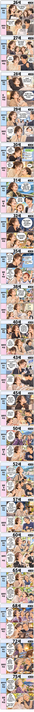

다 떠나서 여자나이 50세 넘어서도
취미 동아리에서 사람 만나고 취미 동료들 생기고
같이 어울리고 하는건 좀 판타지 아니냐?
나이 68에 친구 4명과 온천 여행가는건 1년에 한번 있는 일회성 이벤트이고

다 떠나서 여자나이 50세 넘어서도
취미 동아리에서 사람 만나고 취미 동료들 생기고
같이 어울리고 하는건 좀 판타지 아니냐?
나이 68에 친구 4명과 온천 여행가는건 1년에 한번 있는 일회성 이벤트이고
대가리는 왜이렇게 치켜세우고있어
둘다 하면 되는데? 실제로도 그러고 있음..
저런 와꾸로 평생 산다면 뭘 후회하겠어
나름 밸런스맞는거 같은데 비혼쪽이 판타지 같아 보일순 있어도 결혼쪽도 자식들이 잘될거란 보장은 없으니까 자식이 사고친다거나 하는 식으로 안좋은 쪽으로도 갈수 있으니 그냥 또이또이로 보임
양쪽 다 단점보다는 장점위주로 보면서 둘 중 어느 삶이 더 끌리는지 생각해서 고르면 될거같은데 난 그래도 일단 결혼하고싶음...
중요한건 결혼한 사람은 둘다할수있고 결혼안하면 둘중하나만한다는거임
이혼율이 50%인 세상에서 결혼한 삶이라고 노후에 혼자가 아니라고 단정짓는 것이 가장 큰 에러 아님?
그럼 미혼이 후회없이 노인이 될 확률은 50퍼는 되고?
서로 최선의 시나리오를 보여주는거야
둘다 최선의 시나리오로 가는거지
둘의 행복 평균값이 같다면 행복의 고점은 기혼이 높긴하다 가치관이 달라지는 이유가 있음
걍 자기가 선택한 인생 미혼이든 비혼이든 자기가 만족하면 됐지 뭐
행복하다면 OK입니다
중요한거는 돈이다. 그리고 몇몇 오랫동안 봐온 친구나 가족, 주변 사람들.
돈 많고 혼자사는 아가씨(?)인데 사회성도 좋으면, 결혼 안하고 50이든 60이든, 70이든 강아지나 고양이 키우면서 취미활동이나 하면서 잘 살더라.
반대로, 돈이 없고 결혼 혼기를 놓치면 가난하게 사는 경우가 많음. 집에는 애완동물 기를 형편이 안되니까 주로 길고양이 밥주면서 애정을 듬뿍 주면서 살더라.
사회성이 좀 안 좋아지기도 함.
주변도르 기준임.
남 한테 피해 안주면서 자기가 행복하다면 좋지 않을까.
듈다 희망은 갖고 살아야하지 않겠냐
여자들은 모임같은거 정말 잘 만들고 사람들이랑 어울리는거 잘함. 나이 먹던 안먹던 그건 변하지 않는것 같음.
어딜 가도 여자들의 모임은 있어. 남자는 잘 모르겠는데.. 지금 어르신들은 그래도 사람 만나러 다니고 했던 세대인데 지금 젊은 세대는 온라인이 더 편하고 익숙하지 않나. 모르는 사람이랑 멀 같이 하기 위한 모임? 쉽지 않네